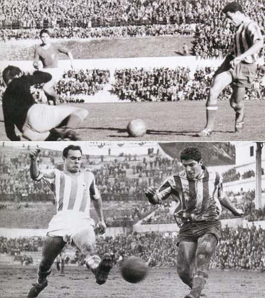
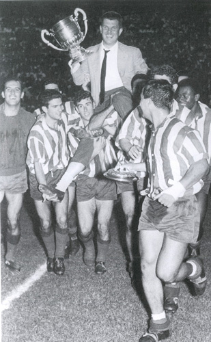
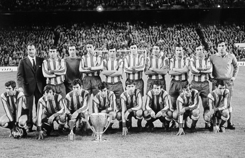

Historia
Página NO Oficial del Atético de MadridEL "PITIDO INICIAL"
El 26 de abril de 1903 nace el Athletic Club de Madrid impulsado por un grupo de estudiantes vascos que deciden unirse para fundar un nuevo club que compitiera con el más noble e impecable talante deportivo.
Enrique Allende es nombrado primer presidente.
La camiseta del equipo es de color azul y blanco en franjas verticales y el pantalón negro o blanco.

COMIENZA LA COMPETICIÓN 2 MAYO 1903
En un terreno situado detrás de las tapias del Retiro se ubicó el campo de fútbol del Athletic y el 2 de mayo de 1903 se organizó el primer partido, disputado entre sus socios.

EL ATLÉTICO SE TIÑE DE ROJIBLANCO 22 ENERO 1911
Las camisetas rojiblancas se empezaron a utilizar el 22 de enero de 1911 surgiendo el apelativo de “colchoneros”, por la similitud del uniforme con las fundas de los colchones de la época.

NUEVA CASA EN O'DONELL 9 FEBRERO 1913
El presidente D. Julián Ruete impulsó la construcción de un nuevo campo que destacara al Athletic como un club de gran solera consolidándolo entre las grandes entidades de España.
Así, el 9 de febrero de 1913, se inauguró el llamado campo de O’Donnell.
UN CLUB 'DE PORTADA' 22 NOVIEMBRE 1917
El 22 de noviembre de 1917 la prestigiosa revista deportiva madrileña de la época Madrid-Sport publicó en portada el escudo del Athletic Club de Madrid, cuyo diseño ha permanecido prácticamente inalterable.
EL PRIMER TÍTULO 23 ENERO 1921
Al conquistar el Campeonato Regional de la Federación Centro el 23 de enero de 1921 superando al Madrid se consigue el primer triunfo oficial.
Era el trampolín para alcanzar la división de honor nacional, el campeonato de España.

EL METROPOLITANO, NUEVA CASA DE TODOS LOS ATLÉTICOS 13 MAYO 1923
El Stadium Metropolitano fue inaugurado el 13 de mayo de 1923, convirtiéndose en la nueva casa de todos los atléticos.
El infante D. Juan de Borbón fue quien hizo el saque de honor ante 25.000 espectadores.

CAMPEONES EN CHAMARTÍN 1925
En 1925 y 1928 se consiguió el Campeonato Regional.
En el primero, batiendo a la Gimnástica Española por 3-1 en el Metropolitano.
Tres años después el rival fue el Real Madrid, al que se superó en Chamartín por 1 a 3.
EL ATHLETIC VUELA ALTO 1939
Con la llegada de la guerra civil en el año 1936 fueron suspendidas las competiciones oficiales.
Cuando finalizó el conflicto, el club se fusionó con el Aviación Nacional, sección deportiva del Ejército del aire, bajo la nueva denominación de Athletic Aviación de Madrid.

EL DELIRIO DE LAS DOS LIGAS 1940
A comienzos de los años 40, llegan los primeros triunfos importantes de la historia del club: la conquista de las Ligas de la temporadas 1939/40 y 1940/41.
Ricardo Zamora en la foto junto a su plantilla fue el hombre que lanzó al equipo a lo más alto.
LA DELANTERA DE SEDA 1947
Durante la década de 1940, destacan jugadores como Juncosa, Vidal, Silva, Campos y Escudero que formaron la famosa "delantera de seda" que hacía las delicias de todos los auténticos sibaritas del fútbol.
En esta etapa llegan al club grandes fichajes como Marcel Domingo, Carlsson o Larbi Ben Barek para formar un equipo legendario.
CONTINÚAN LOS ÉXITOS 11 AGOSTO 1949
Helenio Herrera llega al banquillo el 11 de agosto de 1949.
Bajo su mando se consiguen los títulos ligueros en las temporadas 1949/1950 y 1950/1951.
COLLAR Y PEIRÓ, EL 'ALA INFERNAL' 1959
En el año 1959, los jugadores Joaquín Peiró y Enrique Collar formaban el “ala infernal”, una de las mejores parejas de la historia futbolística que fabricaban jugadas de ensueño por la banda izquierda.

EL ATLETI SE TOMA SU PRIMERA COPA 1960
La década de 1960 fue muy exitosa en cuanto a resultados.
En la temporada 1959/60, de la mano del entrenador José Villalonga, el club consiguió su primera Copa del Generalísimo (actual Copa del Rey), al derrotar a su rival histórico, el Real Madrid, en su propio estadio por 1-3.

UN GRANDE DE ESPAÑA 2 JULIO 1961
Por segunda vez consecutiva, el 2 de julio de 1961, el Santiago Bernabéu es testigo de una victoria ante el eterno rival tras un resultado de 3 goles a 2 a favor de los colchoneros.
EUROPA ES ROJIBLANCA 10 MAYO 1962
Tras eliminar a distintos rivales, el equipo logró llegar a la primera final internacional de su historia: la Recopa de Europa.
Se disputó el 10 de mayo de 1962 en Glasgow (Escocia), con resultado de 1-1 ante la ACF Fiorentina de Italia.
El partido de desempate se disputó en el Neckarstadion de Stuttgart (Alemania), donde el Atlético derrotó a la Fiorentina por 3-0.
Así, el club conquistó el primer trofeo europeo oficial de su historia.
UN EQUIPO COPERO 1964
En la temporada 1964/1965, con D. Vicente Calderón en la presidencia, llegó a las vitrinas la tercera Copa del Generalísimo, tras derrotar por 1-0 al Real Zaragoza en la final.
Al año siguiente, en la temporada 1965/66, el Atlético obtuvo un nuevo título de Liga.
NUESTRO NUEVO HOGAR 2 OCTUBRE 1966
El 2 de Octubre 1966 es inaugurado el estadio del Manzanares.
A diferencia de los estadios de la época, todas las localidades disponían de asientos, algo que llenaba de orgullo a la parroquia rojiblanca.
En la foto, el primer once que saltó al campo.
LOS EXITOSOS AÑOS 70 1969
La década de 1970 trajo muchas satisfacciones a la afición del Atlético de Madrid.
En la temporada 1969/70, el conjunto colchonero ganó su sexta Liga, de la mano del entrenador francés y ex jugador rojiblanco Marcel Domingo, que contó con una de las escuadras más recordadas de la historia: Rodri, Melo, Ovejero, Eusebio, Calleja, Irureta, Adelardo, Luis Aragonés, Alberto, Ufarte y Gárate.

DEL MANZANARES AL ESTADIO VICENTE CALDERÓN 23 MAYO 1972
El Estadio del Manzanares, llamado así desde el año 1966, pasa a llamarse Estadio Vicente Calderón en reconocimiento al presidente del club.
El estadio fue inaugurado oficialmente bajo esa denominación el 23 de mayo de 1972, con motivo de un encuentro entre España y Uruguay.
OTRO TÍTULO EN LA CASTELLANA 8 JUNIO 1972
Tras una sensacional trayectoria en la Copa del Generalísimo del año 72, el Santiago Bernabéu volvía a ser testigo de un título atlético el 8 de julio.
Nada pudo hacer el Valencia.
Los goles de Salcedo y Gárate fueron suficientes para alzar la cuarta Copa del Generalísimo.
Y LLEGÓ LA SÉPTIMA 1973
El año 1973 fue muy exitoso para el club tras conquistar la séptima Liga de su historia con el alemán Merkel en el banquillo.
EL DESENCANTO DE BRUSELAS 15 MAYO 1974
El 15 de mayo de 1974, en Bruselas, el Atlético de Madrid disputó la final de la Copa de Europa 1973-74 contra el Bayern Munich, empatando 1-1, y siendo derrotados días más tarde por los alemanes 4-0.
INTERCONTINENTAL ROJIBLANCA 1975
El Bayern se negó a jugar la Copa Intercontinental contra el Club Atlético Independiente de Avellaneda.
Por este motivo, en concepto de subcampeón de la Copa de Europa de 1974, la disputamos a doble partido en el año 1975.
El primer encuentro con Luis Aragonés como entrenador tuvo un resultado de 1-0 a favor de Independiente.
En el segundo partido, el Atlético ganó 2-0 para proclamarnos campeones
UNA COPA CON HISTORIA 1976
En la temporada 1975/76, nos adjudicamos nuestra quinta Copa del Generalísimo, la última edición bajo este nombre.
CAMPEONES POR SAN ISIDRO 1977
En la temporada 1976/77 alzamos nuestra octava Liga.
El título se selló en el Bernabéu en un partido que se jugó el día de San Isidro.
Doble motivo para celebrar.
REYES DE ESPAÑA 1985
En 1985 el equipo conquistó nuestra sexta Copa del Rey ante el Athletic Club de Bilbao.
El título se logró en el Bernabéu.
SUPERCAMPEONES DE ESPAÑA 1985
La temporada 1985/86 comenzó de forma brillante conquistando la Supercopa de España ante el Fútbol Club Barcelona.
JESÚS GIL LLEGA A LA PRESIDENCIA 1987
En el año 1987, tras el fallecimiento de Vicente Calderón, llega a la presidencia del club Jesús Gil y Gil con Paolo Futre como buque insignia de su proyecto deportivo.
ABEL, UN PORTERO DE RÉCORD 1991
El portero Abel Resino logra el récord de imbatibilidad durante 14 jornadas al estar 1.275 minutos sin encajar un gol.
OTRA COPA DE ESPAÑA 29 JUNIO 1991
El 29 de junio de 1991, dirigidos por Iselín Santos Ovejero, nos proclamamos campeones de la Copa del Rey por séptima vez.
EL BERNABÉU LUCIÓ ROJIBLANCO 27 JUNIO 1992
El 27 de junio de 1992, dirigidos por Luis Aragonés, logramos adjudicarnos nuestra octava Copa del Rey tras derrotar al Real Madrid por 2-0 en el Estadio Santiago Bernabéu.
EL GLORIOSO DOBLETE 1996
La temporada 1995/96 fue una de las más importantes del club, ya que por primera vez en nuestra historia conseguimos “el doblete” al conquistar la Liga y la Copa del Rey en la misma temporada.
EL CABEZAZO DE PANTIC 10 ABRIL 1996
El 10 de abril de 1996, el equipo venció por 1-0 al FC Barcelona en el Estadio de la Romareda, con un gol marcado de cabeza por el serbio Pantic a pase del lateral Delfí Geli.
Era la novena Copa del Rey de nuestra historia.
ANTIC Y UN EQUIPO DE LEYENDA 25 MAYO 1996
El 25 de mayo de 1996, el equipo dirigido por Radomir Antic consiguió el noveno título de Liga del club.
UN VIAJE DE IDA Y VUELTA 2002
Tras descender a Segunda División al final de la temporada 1999/00, el equipo logró retornar a Primera División en el 2002, dirigido por Luis Aragonés.
En el equipo destacaba un joven jugador de la cantera llamado Fernando Torres.
EL PRÍNCIPE, CON EL ATLÉTICO 2003
S.A.R el Príncipe de Asturias, Don Felipe de Borbón y Grecia, fue el Presidente de Honor del Centenario.
UN CLUB CENTENARIO 26 ABRIL 2003
El 26 de Abril de 2003 se celebra el centenario del club, un evento centrado en homenajear a la entidad y en especial a los aficionados atléticos, los cuales participaron entusiasmados y orgullosos en todas las actividades programadas, como portar la bandera mas larga del mundo en ese momento desde Neptuno hasta el Calderón.
NOS MUDAMOS 2008
A finales del año 2008 se produce un gran acontecimiento.
El club llega a un acuerdo con el Ayuntamiento de Madrid para la construcción de su nuevo estadio.
Un pilar que fortalecerá a la entidad.
FORLÁN SELLA LA EUROPA LEAGUE 12 MAYO 2010
El Atlético de Madrid, con Quique Sánchez Flores al mando, se proclamó campeón de la primera edición de UEFA Europa League, antigua Copa de la UEFA, en una emocionante final disputada el 12 de mayo de 2010 en el HSH Nordbank Arena de Hamburgo.
El Atlético se impuso al Fulham FC, con prórroga incluida, por 2-1 con dos goles del uruguayo Diego Forlán.

PRIMERA SUPERCOPA DE EUROPA 27 AGOSTO 2010
Las vitrinas rojiblancas recibieron el 27 de agosto de 2010 su primera Supercopa de Europa tras vencer al Inter de Milán, campeón de la Champions League.
El partido, que se disputó en el Estadio Louis II de Mónaco, finalizó con marcador favorable para los colchoneros (2-0).
BUCAREST CORONA AL ATLÉTICO 9 MAYO 2012
El 9 de mayo de 2012 el estadio Nacional de Bucarest fue testigo de la final de la UEFA Europa League ante el Athletic Club de Bilbao, que supuso nuestro segundo título de la competición tras imponernos 3-0 con dos goles de Falcao y uno de Diego Ribas.
FALCAO Y MIRANDA FIRMAN OTRA SUPERCOPA 31 AGOSTO 2012
La final de la Supercopa de Europa contra el Chelsea FC el 31 de agosto de 2012 fue la quinta disputada por el equipo en poco más de dos años.
Los nuestros se impusieron por 4 goles 1 al campeón de Europa con un hat-trick de Falcao, mejor jugador de la final, y otro gol de Miranda.
DIEGO COSTA Y MIRANDA REMONTAN UNA FINAL PARA LA HISTORIA 17 MAYO 2013
El 17 de mayo conseguimos nuestra décima Copa del Rey.
Fue en el Bernábeu y en un partido épico que necesitó de una prórroga para encontrar vencedor.
Los nuestros empezaron por detrás en el marcador, pero los goles de los brasileños Diego Costa y Miranda completaron el 1-2 final.

CAMPEONES EN EL CAMP NOU 17 MAYO 2014
La Liga 2013-14 se decidió en la última jornada.
Visitamos a un Fútbol Club Barcelona obligado a ganar para celebrar el título de Liga.
Pero los de Gerardo Martino no pudieron doblegar a los nuestros.
El gol de Godín a la salida de un córner neutralizó el tanto de Alexis, que había adelantado al equipo local.
El empate a uno final valía un título, nuestro décimo campeonato de Liga.
SUBCAMPEONES DE EUROPA 24 MAYO 2014
Después de conquistar la Liga en el Camp Nou, Lisboa recibió a los nuestros para el último partido de la temporada.
La final de la Champions frente al Real Madrid se decantó del lado blanco (4-1) en la prórroga, pese a que los nuestros fueron por delante durante la mayor parte del partido gracias a un gol de Godín.
LA SUPERCOPA DE ESPAÑA VUELVE A SER ROJIBLANCA 23 AGOSTO 2014
En agosto de 2014 los nuestros se impusieron al Real Madrid y conquistaron la segunda Supercopa de España de la historia del club, después de la que ganamos en 1985 ante el Fútbol Club Barcelona.
La final, a doble partido, se resolvió con 2-1 a nuestro favor después de que lográramos empatar a uno en el Bernabéu y nos impusiéramos por 1-0 en el Calderón en el partido de vuelta.
Raúl García y Mandzukic fueron los autores de nuestros goles.
SUBCAMPEONES DE EUROPA 28 MAYO 2016
Nuestro equipo cayó en la tanda de penaltis en la final contra el Real Madrid, tras empatar a uno en los 120 minutos de juego.
Yannick Carrasco fue el autor del gol rojiblanco.
En el camino hasta Milán los nuestros se impusieron a seis campeones de Liga: Galatasaray, Astana, Benfica, PSV, Fútbol Club Barcelona y Bayern de Munich.
HASTA SIEMPRE, CALDERÓN 21 MAYO 2017
Nuestro equipo consiguió una victoria ante el Athletic Club (3-1) en el último partido oficial en el estadio Vicente Calderón.
Fernando Torres hizo un doblete y Ángel Correa fue el autor del último tanto.
Un día cargado de emociones y que concluyó con un homenaje al que ha sido nuestro estadio durante 50 temporadas.
UN FINAL DE LEYENDA 28 MAYO 2017
En el último adiós al Vicente Calderón vivimos una auténtica fiesta del fútbol en rojo y blanco.
La ‘Final de Leyenda’ llenó el coliseo rojiblanco en un partido benéfico que reunió a diferentes jugadores históricos que defendieron nuestros colores en un partido frente a un combinado de estrellas del fútbol mundial.
UN SUEÑO HECHO REALIDAD 16 SEPTIEMBRE 2017
El Wanda Metropolitano se estrenó con una victoria ante el Málaga (1-0).
Antoine Griezmann se convertía en el primer goleador de la nueva casa de todos los atléticos en una jornada que acabó con vuelta de honor del equipo, un impresionante espectáculo de luces y fuegos artificiales.
Sólo cuatro días después de su estreno, la UEFA elegía al Wanda Metropolitano como sede de la final de la Champions League 2019, un premio a un proyecto espectacular.
¡CAMPEONES DE EUROPA LEAGUE! 16 MAYO 2018
Nuestro equipo ganó por tercera vez la Europa League.
En un gran partido disputado por los pupilos de Simeone, Griezmann marcó un doblete y Gabi cerró el marcador para llevarnos el trofeo.
Nuestro capitán alzó junto con Fernando Torres la Europa League al cielo de Lyon para festejar con toda la familia rojiblanca un nuevo titulo europeo que quedará para la historia.
¡CAMPEONES DE LA SUPERCOPA DE EUROPA! 15 AGOSTO 2018
Los nuestros alzaron la tercera Supercopa de Europa de nuestra historia en Tallin.
En un vibrante encuentro frente al Real Madrid, los nuestros vencieron por 2-4 en un duelo en el que marcaron Diego Costa, que hizo un doblete, Saúl y Koke.
VALLADOLID, ESCENARIO DE LA UNDÉCIMA LIGA 22 MAYO 2021
Como en nueve de las diez ocasiones anteriores en las cuales nos proclamamos campeones, LaLiga 2020-21 se decidió de nuevo en la última jornada.
En un intenso encuentro a domicilio frente al Real Valladolid, nuestro equipo se impuso por 1-2 con goles de Ángel Correa y Luis Suárez, remontando el tanto inicial blanquivioleta y coronándose vencedor del torneo de la regularidad por undécima vez.